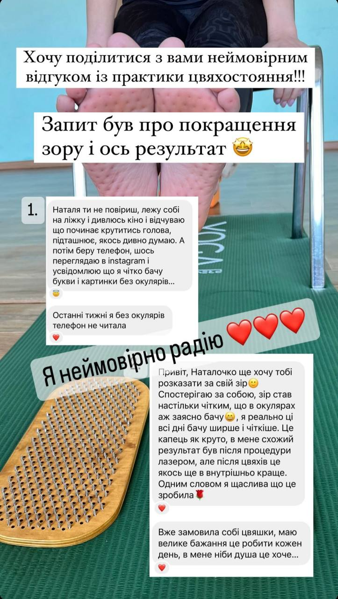
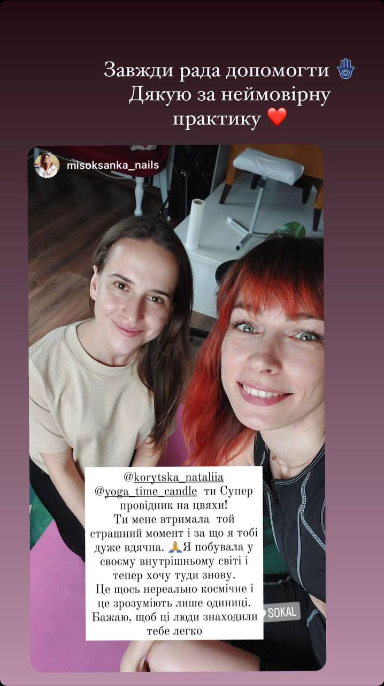
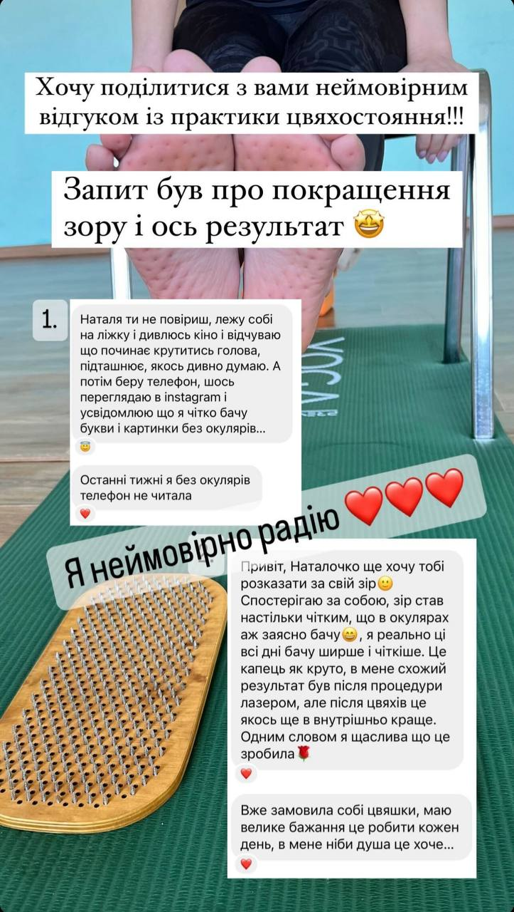
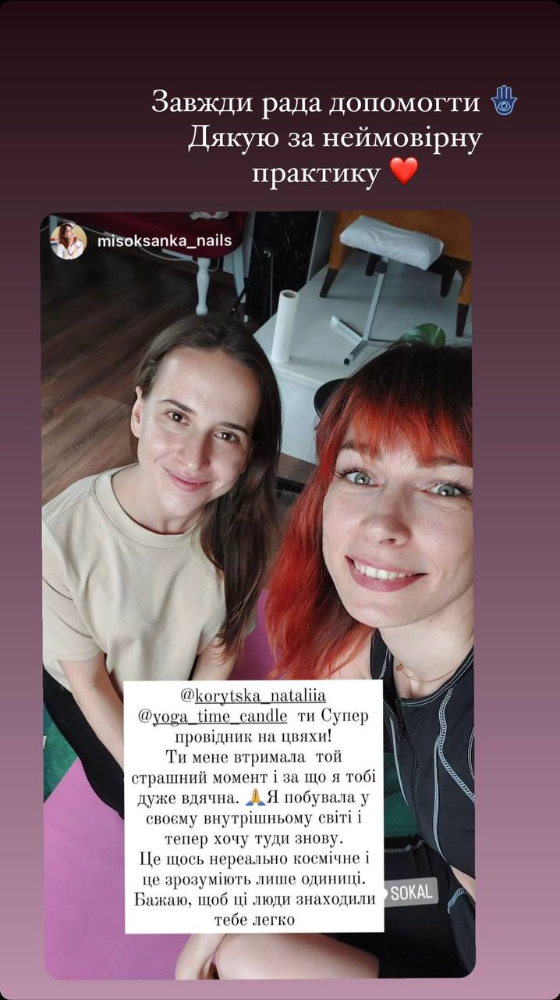

Намасте! Я Наталя. У 16 років я відкрила для себе багатогранний світ йоги. Йога для мене - це не лише асани, а ціла система самопізнання тіла, розуму та душі. Після 7 років особистої практики та отримавши сертифікацію я є успішним викладачем із хатха-йоги та кундаліні йоги.
Дошки Садху - це ще один інструмент моїх внутрішніх трансформацій. Я отримала сертифікацію провідника та вже поставила 50+ людей на цвяхи!!!
Будучи в постійному духовному пошуку, я отримала безцінні знання та метод активації життєвої енергії Кундаліні. Вже після першої особистої практики, я зрозуміла, що ця енергія дійсно змінює життя і робить нас усвідомленими та щасливими. Я пройшла навчання у Гуру і тепер володію унікальним методом пробудження енергії: поєднанням трансмісії та пранаями (дихання).
Освіта:
НЮУ ім. Я.Мудрого (магістр права, Харків)
Gogoschool (інструктор хатха-йоги pro level, Харків)
"Meditation with Sadhu nail board" course (провідник на дошки Садху, Київ)
Course with Daria Smirnova "Kundalini facilitator" (фасилітатор енергії Кундаліні, Балі)
Відвідала та прослухала десятки лекцій, семінарів з анатомії хатха-йоги, вивчення тонкого простору та активації Кундаліні.
P.S. Незалежно від того, чи ви досліджуєте свій внутрішній світ вперше чи присвятили цій мандрівці все життя, тут ви відчуєте, як це бути вільним від обмежень.
 


